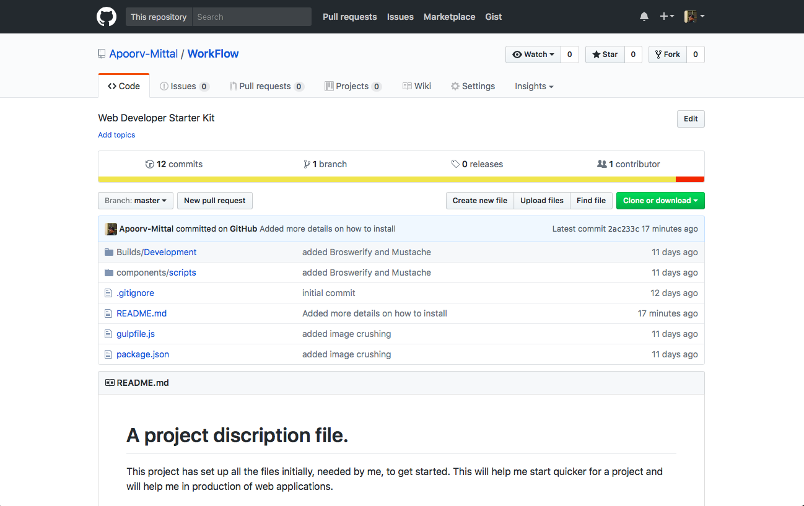
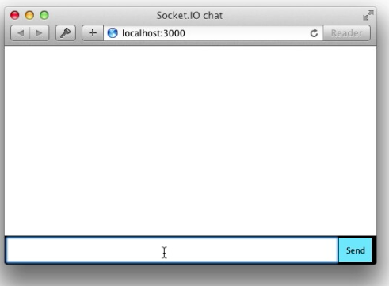
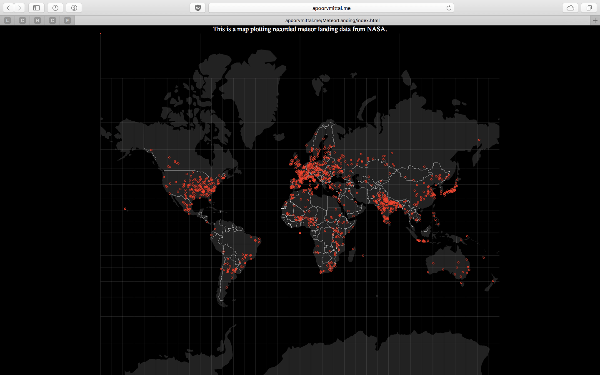
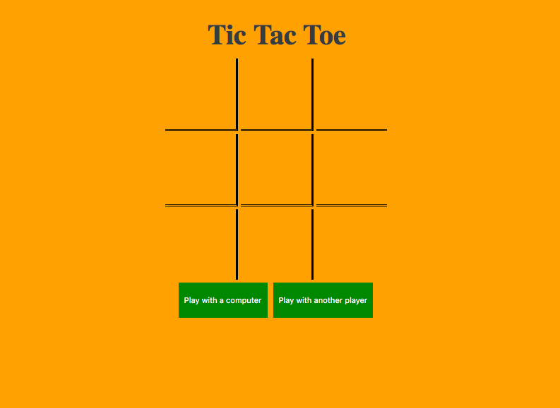
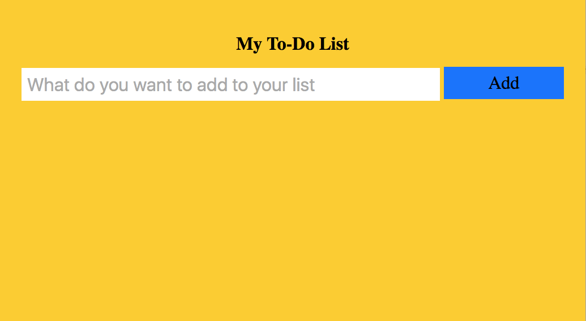
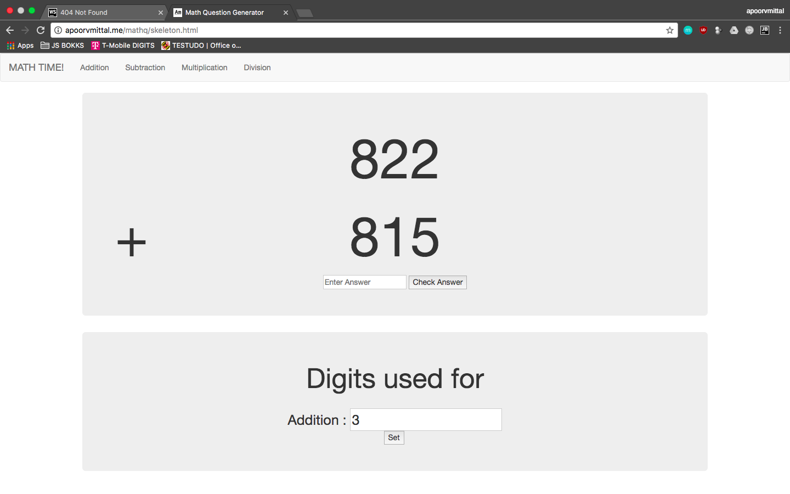
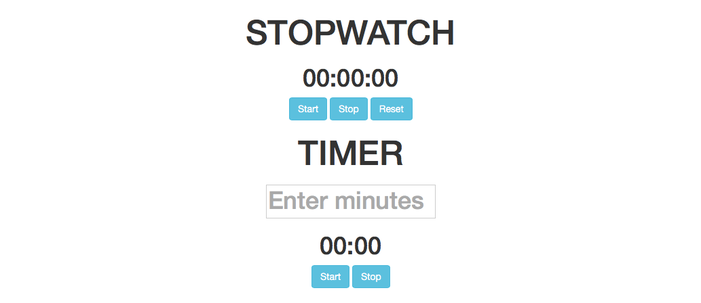
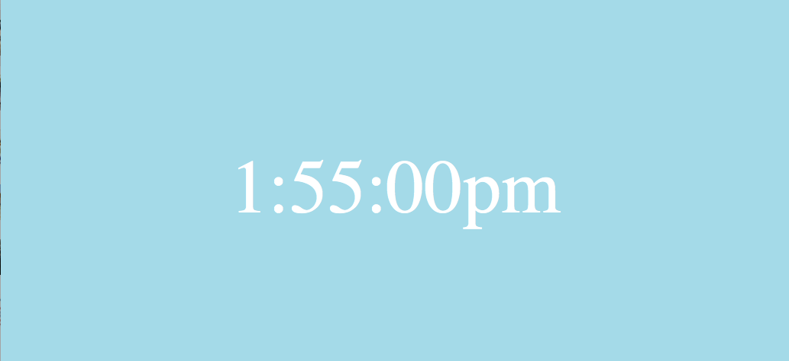

Projects Completed

Web Developer Starter Kit
This project contains all the files initially needed by me to get started for a Web Project. This will help me start quicker for a project and will increase my productivity

Messaging App
A messaging app which shows the username and the message online and updates in real time.

Meteor Landing Map
Meteor landings plotted on a map. Used D3 libraries.

Tic-tac-toe
A simple tic-tac toe game designed in HTML,CSS and JavaScript with some animations. Play this game with either a computer or another player.
Calculator
A simple and scientific calculator made by HTML, CSS and JavaScript.

To-Do List
A personal To-Do list designed by using HTML, CSS and JavaScript.

Math Question Generator
A simple math problem generator for my cousin brother or for anyone in grade 4 or less. It is designed in HTML and JavaScript.

Stopwatch and Timer
Stopwatch and Timer designed in HTML and JavaScript. The stopwatch also plays a beep sound every hour and the timer play beeps every second the time is done.

Watch
A simple watch designed in HTML, CSS and JavaScriptProjects Under Work
Trying to learn how to contribute to open source projects.